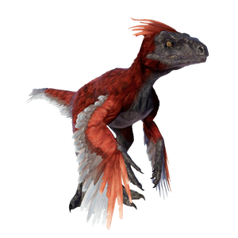

Useful Website
The predatory theropod Pyroraptor is a member of the Dromaeosauridae family that lived in Europe during the late Cretaceous period. Measuring around 2.4m in length, Pyroraptor relies on its impressive speed rather than power when stalking its prey and prefers to hunt in packs like its more famous cousin, Velociraptor. Its sharp claws help Pyroraptor to catch its prey but are also used for climbing.
